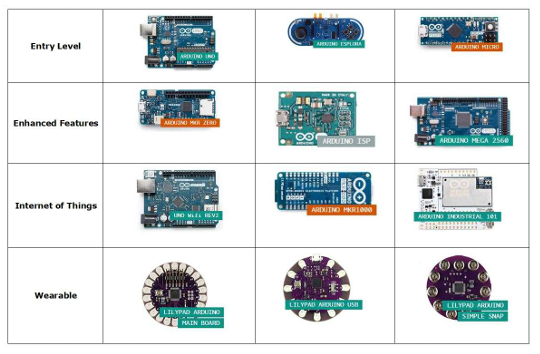
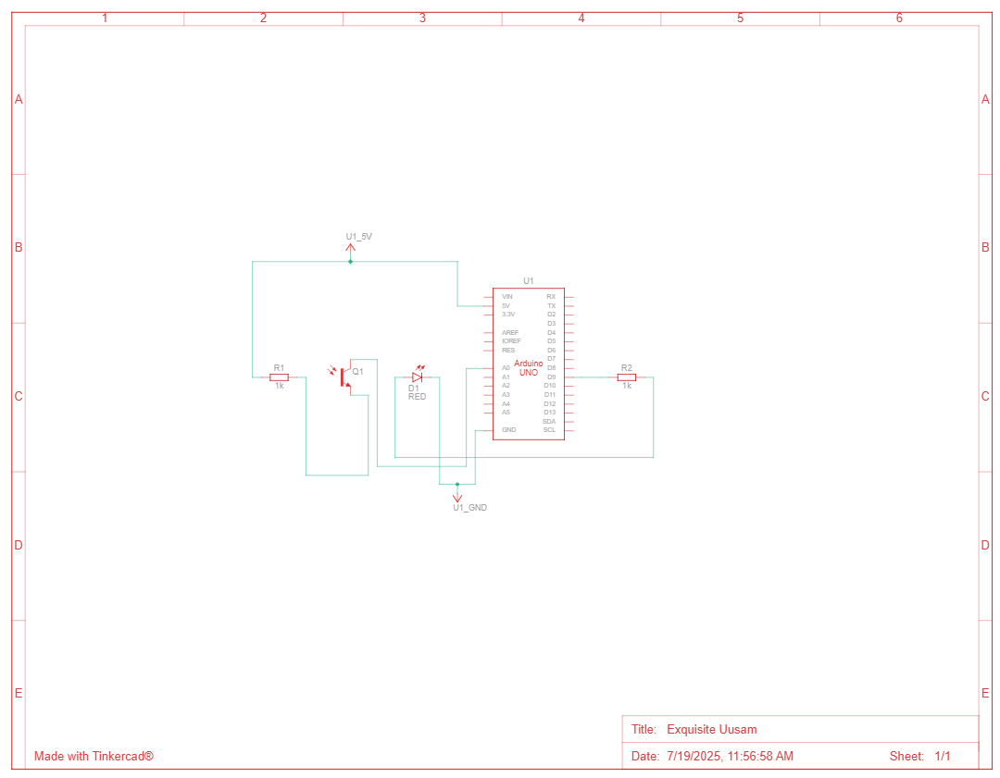

Automatic Light Control Using LDR
The project utilizes an LDR (Light Dependent Resistor) and an Arduino microcontroller to create an automatic light control system. An LDR is a sensor whose resistance varies with light intensity—it decreases as light increases. The Arduino, an open-source electronics platform, reads the analog signal from the LDR and makes decisions based on the light level. This allows the system to automatically turn lights ON or OFF depending on the surrounding brightness, making it efficient and energy-saving.
The Arduino Platform
History and Evolution of Arduino
Arduino was born out of a need to provide artists, designers, and hobbyists with an easy-to-use platform for creating interactive projects. It originated in 2005 at the Interaction Design Institute Ivrea (IDII) in Ivrea, Italy. The founders, including Massimo Banzi and David Cuartielles, sought to simplify electronics prototyping. The first Arduino board was based on the ATmega8 microcontroller and was named “Arduino” after a bar in Ivrea.
Over the years, Arduino has evolved from simple 8-bit boards to more powerful 32-bit versions and even FPGA-based boards. Some major versions include: - Arduino Uno: The most popular and widely used board - Arduino Mega: More I/O pins and memory - Arduino Nano: Compact and breadboard-friendly - Arduino Due: 32-bit ARM Cortex-M3 processor - Arduino MKR and Portenta series: Designed for IoT and industrial applications
Arduino Uno Architecture
Arduino Uno is based on the ATmega328P microcontroller. It features: - 14 digital input/output pins (of which 6 can be used as PWM outputs) - 6 analog inputs - 16 MHz quartz crystal - USB connection - Power jack - ICSP header - Reset button

Diagram Overview
- CPU : ATmega328P
- Flash memory: 32 KB
- SRAM: 2 KB
- EEPROM: 1 KB
- Operating voltage: 5V
- Clock speed: 16 MHz
GPIO, Analog-Digital Pins, and Timers
GPIO (General Purpose Input/Output)
- Digital pins: D0 to D13
- Can be configured as INPUT or OUTPUT
- Used to control LEDs, motors, read button states, etc.
Analog Pins
- Pins A0 to A5
- Read analog signals using ADC (10-bit resolution)
- Typically used with sensors like LDRs, temperature sensors
Timers
- Timer0, Timer1, and Timer2
- Used for delay(), millis(), PWM generation, and interrupts
Coding with Arduino IDE
The Arduino IDE is a simple development environment that uses a simplified version of C/C++.
Basic Structure of a Sketch:
void setup() {
pinMode(13, OUTPUT);
}
void loop() {
digitalWrite(13, HIGH);
delay(1000);
digitalWrite(13, LOW);
delay(1000);
}
Features
- Upload via USB
- Serial monitor for debugging
- Built-in libraries
- Board manager and library manager for extensions
Sample Projects and Libraries
Sample Projects
- Automatic Plant Watering System
- Smart Home Lighting Control
- Weather Station with Sensors
Popular Libraries
- Servo.h: For controlling servo motors
- LiquidCrystal.h: For LCDs
- Wire.h: For I2C communication
- SPI.h: For SPI devices
- SoftwareSerial.h: For additional serial ports
Sensors and Actuators
Common Sensors
- LDR (Light Dependent Resistor)
- DHT11/DHT22 (Temperature and Humidity)
- Ultrasonic sensors (HC-SR04)
- PIR motion sensors
- Gas sensors (MQ series)
Common Actuators
- LEDs (Light Emitting Diodes)
- DC motors
- Servo motors
- Relays
- Buzzers
Communication Protocols
I2C (Inter-Integrated Circuit)
- Two wires: SDA (data), SCL (clock)
- Used for sensors, RTC modules, displays
SPI (Serial Peripheral Interface)
- Four wires: MOSI, MISO, SCK, SS
- Faster than I2C, suitable for high-speed data transfer
- Used with SD cards, displays, and sensors
UART (Universal Asynchronous Receiver/Transmitter)
- Serial communication (TX, RX)
- Used for serial monitor, Bluetooth modules (HC-05)
IoT Integration Basics
Arduino can be connected to the internet using: - Ethernet Shields - Wi-Fi Modules (ESP8266, ESP32) - GSM/GPRS modules (SIM800L)
Common IoT Platforms
- Blynk
- Thingspeak
- Arduino IoT Cloud
- MQTT Protocol
- Remote data monitoring
- Smart agriculture
- Home automation
- Real-time notifications via mobile apps
Introduction to the Project
This project aims to automatically control a light source based on the ambient light level using an Arduino Uno and a Light Dependent Resistor (LDR). The system detects darkness using the LDR and automatically turns on an LED, mimicking a real-world streetlight or room lighting system.
Such systems help save electricity and reduce human dependency for switching lights on/off. They are commonly implemented in street lighting, automatic night lamps, and smart homes.
Problem Statement
Manual operation of lighting systems often leads to wastage of electricity when users forget to turn off lights in daylight or when a room is unoccupied. The goal is to develop an automated system that:
- Detects ambient light level
- Turns on the light in darkness
- Turns off the light during daylight
Components Used (with Descriptions)
| Component | Quantity | Description |
|---|---|---|
| Arduino Uno | 1 | Microcontroller board to control the system |
| LDR | 1 | Light sensor that varies resistance with light |
| 10kΩ Resistor | 1 | For voltage divider with LDR |
| 220Ω Resistor | 1 | FLimits current through LED |
| LED | 1 | Light output device |
| Breadboard | 1 | For easy prototyping without soldering |
| Jumper Wires | ~8 | For making circuit connections |
Circuit Diagram
The LDR and 10kΩ resistor are configured as a voltage divider. The midpoint is connected to Arduino’s analog pin A0. The LED is connected to pin 13 through a 220Ω resistor.
- 5V ---- LDR ---- A0 ---- 10kΩ ---- GND
- Pin 13 ----> 220Ω ----> LED (+)
- LED (-) ----> GND
Code Explanation
int ldrPin = A0; // LDR connected to analog pin A0
int ledPin = 13; // LED connected to digital pin 13
int threshold = 600; // Light threshold value
void setup() {
pinMode(ledPin, OUTPUT);
Serial.begin(9600);
}
void loop() {
int ldrValue = analogRead(ldrPin);
Serial.println(ldrValue);
if (ldrValue > threshold) {
digitalWrite(ledPin, HIGH); // Light ON in darkness
} else {
digitalWrite(ledPin, LOW); // Light OFF in brightness
}
delay(500);
}
Code Highlights
- analogRead() to read LDR values
- digitalWrite() to switch LED
- Serial Monitor for debugging
Simulation (Tinkercad Link and Screenshots)
The circuit and code were simulated using Tinkercad:
View Simulation on TinkercadHere are some screenshots of the simulation:
Working Demo with Video
The prototype was built on a breadboard. When ambient light is reduced (e.g., LDR covered), the LED turns on. When exposed to bright light, the LED turns off.
Applications
- Automatic street lighting
- Garden and pathway lights
- Indoor night lamps
- Solar-powered lighting systems
- Public restroom lighting automation
Limitations and Future Scope
Limitations:
- Sensitive to weather conditions (cloudy days)
- Fixed threshold requires manual tuning
- Only suitable for on/off control (no dimming)
Future Scope:
- Add RTC module to work with time-based logic
- Integrate with IoT platform for remote control
- Use relay to control AC lights
- Use PWM for dimming control
Conclusion
This project successfully demonstrates how an Arduino Uno can be used to automate light control using an LDR sensor. It is a cost-effective and beginner-friendly project with wide real-world applications. The concepts of analog sensing, digital output control, and simulation tools like Tinkercad were effectively utilized.
In future iterations, the system can be enhanced with additional sensors, wireless communication modules, and integration with smart home platforms for improved functionality and user experience.
References
Books
- Simon Monk, Programming Arduino: Getting Started with Sketches, McGraw-Hill, 2016.
- Massimo Banzi & Michael Shiloh, Getting Started with Arduino, 4th Edition, Maker Media, 2022.
- Michael Margolis, Arduino Cookbook, 2nd Edition, O’Reilly Media, 2011.
- https://www.arduino.cc - Official Arduino documentation and tutorials
- https://www.tinkercad.com - Tinkercad online circuit simulator
- https://www.geeksforgeeks.org - Programming and electronics concepts